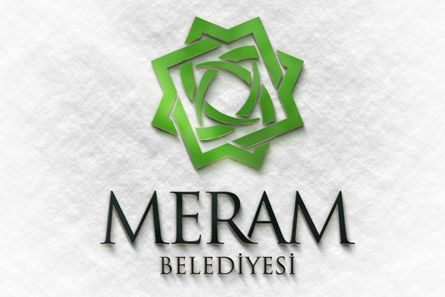

Meram’a ve tüm hemşehrilerimize, her bir çalışanımızla, tevazu, samimiyet ve gayretle en iyi hizmeti sunmaktır. Bu düşünceyi, adaletli, özverili, katılımcı ve çözüm odaklı yaklaşım anlayışı ile kaynakları en etkili ve en verimli bir şekilde kullanıp gönül belediyeciliği anlayışı ile ahlak ve erdem kuralları çerçevesinde teknolojinin tüm imkânlarından da faydalanarak ortaya koyma gayretindeyiz. Dünü; yeniden ihya ederek ecdadın mirasına sahip çıkmak, bugünü; yaşam kalitesiyle özenilen ve yaşamaktan mutluluk duyulan bir ilçe haline getirmek, yarına da; her yönüyle mükemmel bir şehir bırakmak temel fikrimizdir…
Öğrenim hayatına Ali İhsan Dayıoğlugil İlkokulu'nda başlayan Mustafa KAVUŞ, orta ve lise öğrenimini ise Konya İmam Hatip Lisesi’nde bitirdi. 1995 yılında kazandığı Ankara Üniversitesi Siyasal Bilgiler Fakültesi İşletme Bölümü’nü başarıyla tamamlamasının ardından Selçuk Üniversitesi Yönetim Organizasyon Ana Bilim Dalı’nda yüksek lisans eğitimi aldı. Mustafa KAVUŞ, eğitim hayatının yanı sıra küçük yaştan itibaren iş hayatı tecrübesi kazanmaya çalıştı. Tekstil, yayınevi ve gıda sektörlerinde işletmecilik ve yöneticilik yaptı. Tüm bu çalışmalarının yanında siyasete de ilgi duyan Mustafa KAVUŞ, AK Parti ile başladığı siyasi yaşamında 2001-2003 yılları arasında AK Parti İl Gençlik Kolları Kurucu Teşkilatlanma Başkanı olarak görev yaptı. Siyasi tecrübesini 2003-2005 yıllarında İl Teşkilatı Yönetim Kurulu Üyesi olarak sürdüren KAVUŞ, 2011 genel seçimlerinde milletvekili aday adayı oldu. 2004 yılında Konya Büyükşehir Belediyesi Başkanlık danışmanlığına getirilen KAVUŞ, 2006’da Teftiş Kurulu Müfettişliği’ne atandı. 2009 yılında getirildiği Teftiş Kurulu Başkanlığını 2018 yılına kadar sürdürdü. Çevre ve Şehircilik Bakanlığı’nda Bakan Müşaviri olarak görev yapmakta iken aday adaylığı başvurusu için istifa etti. 31 Mart 2019 yerel seçimlerinde Meram Belediye Başkanı seçilen Mustafa KAVUŞ evli ve iki çocuk babasıdır.